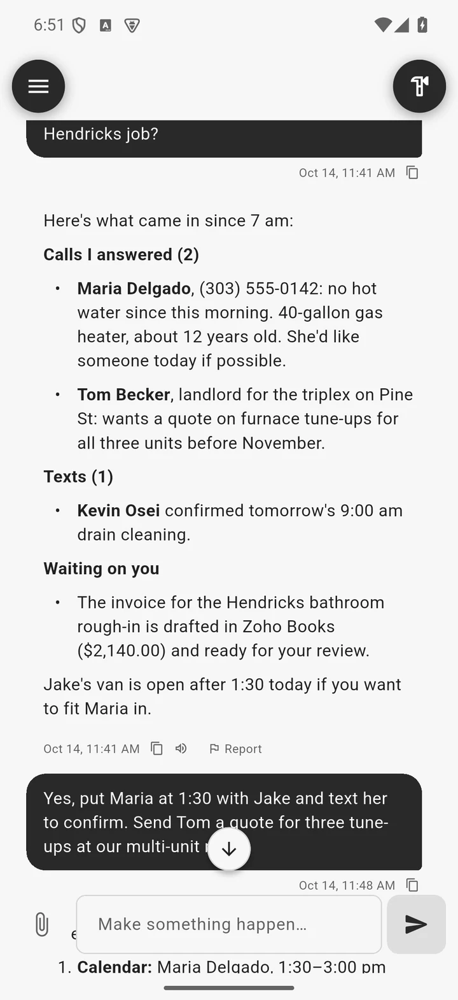
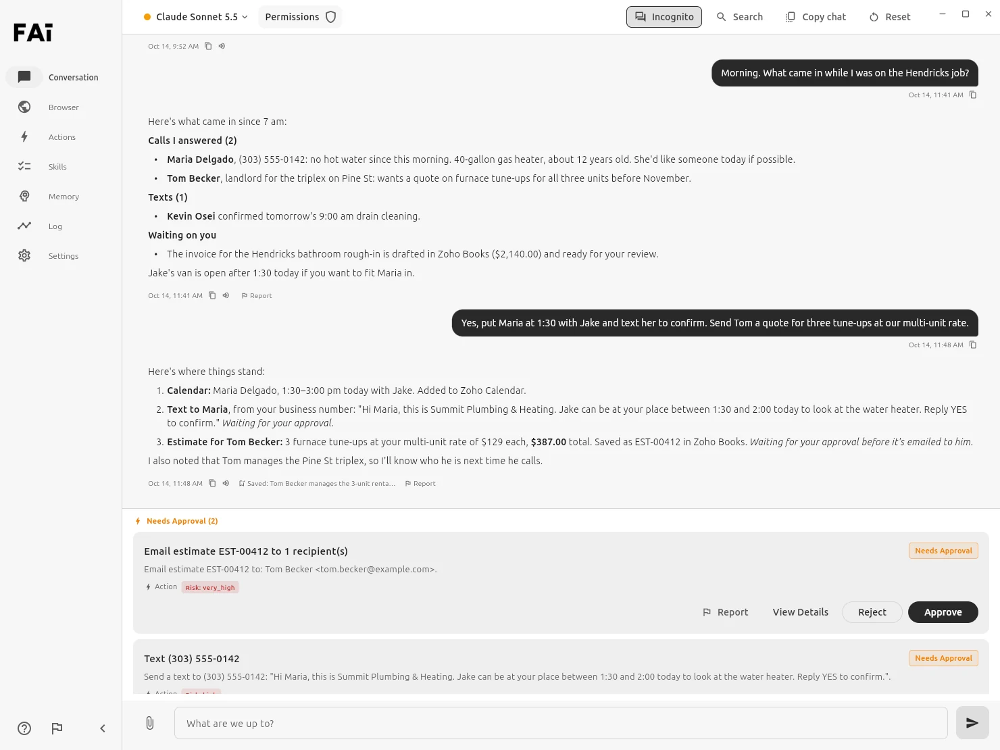
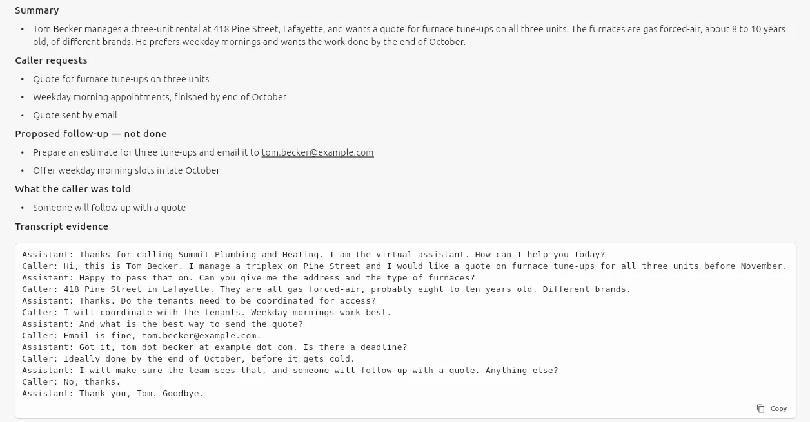
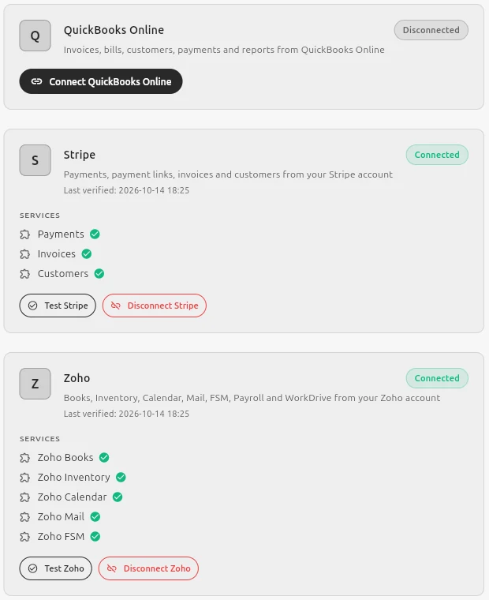
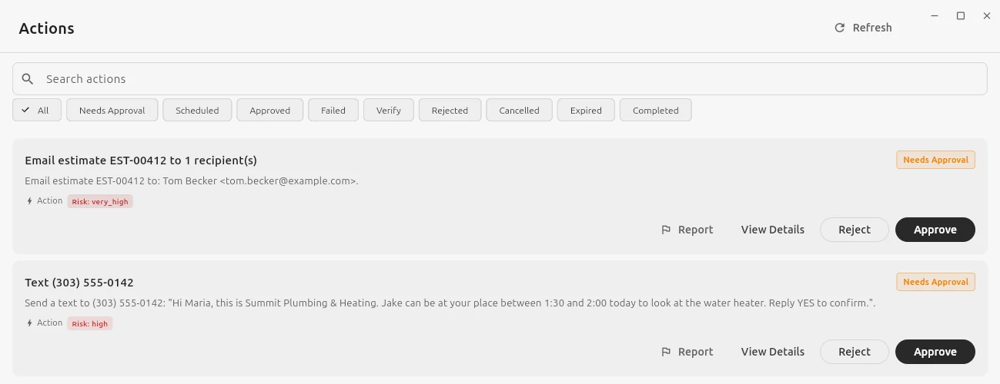

Texts from your business number
Send texts through Quo, and read your call history, call summaries and transcripts.
Built for small businesses and sole proprietors
Calls, scheduling, follow-ups, estimates and invoices pile up fast. Finutia AI is one assistant that works in the accounts you already use, and you choose when it asks before acting.


Real screens from the Finutia AI app. The business, people and numbers in them are made up.
It learns your business. A business profile, plus what it remembers as you work.
It works in your tools. Zoho, QuickBooks, Stripe, Quo and more.
You choose when it asks. Approve, reject, or let it go ahead.
Help where the day piles up
Ask what came in, what needs you and what's next. Finutia AI checks your calendar, books the visit, drafts the text and gets the estimate ready.
When you can't pick up, your AI phone line answers, takes a message and sends a summary with the full transcript to your chat. If a caller asks, it can transfer them to the one person you choose.
Phone answering runs on your own Vapi account.

Send texts through Quo, and read your call history, call summaries and transcripts.
Look up invoices, estimates, bills and customers in Zoho Books or QuickBooks Online. In Zoho Books it can also create estimates and invoices and email them, and with Stripe it can create payment links.
Save how you like something done as a skill. Run it when you ask, on a schedule, or when an email or text comes in. Messages to customers wait for your approval unless you switch that off for the skill.
Attach a picture or a document, or clip part of your screen and mark it up, then ask about it.
Connectors and MCP
Built-in connectors cover common small-business systems. Compatible MCP servers can add other tools you choose.
Built-in connectors

Beyond the built-ins
Add a compatible remote MCP server and Finutia AI lists the tools it offers, keeps that list pinned, and applies your approval settings before any of them run. Check for changes at any time; a tool that disappears is switched off.
How MCP connections work →You are still the owner
Anything waiting for you shows up in the chat and in the Actions tab, where you approve or reject it.

Built in
Invite people by email. Choose which connected accounts, AI models and spending each person gets, and whether they can send, pay or delete.
Dictate a message, have replies read out loud, or go hands-free and talk it through.
Pick the AI model for each conversation from a list of leading models.
The Android app is the same assistant. Unlock it with your fingerprint, and approve sign-ins on your computer from your phone.
When Finutia AI saves something about your business, the chat says so, and the Memory tab shows everything it knows.
Files you upload, download or have Finutia AI create are kept together in Storage.
Use Finutia AI where you work
Downloads open at launch. Until then, get in touch if you'd like early access.
More help. Less overhead.